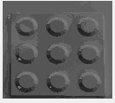

Uniform Resampling
To avoid using unevenly scattered light and image scenes, images and lights are uniformly resampling using a subdivided icosahedron. First, an icosahedron is defined using the standard method with the Golden Ratio. Then, we subdivide each face by linking the 3 midpoints. Next, we interpolate collected images according to the collected lights that are cloest to each icosahedron vertex. This results in a uniformly resampled image set with uniform lighting.Denominator Image
Finding the denominator image allows us to solve the light equation without considering the lambertian value. To do this, we find an image in the collected set that has the highest mean rank riL among its pixels, while satisfying riL less than 90% threshold H and have intensity rank> 70% threshold L. The found image should be free from shadows highlights.Local Normal Estimation
The initial light estimation is done by solving the equation I=NL. By having more than 3 sample images and light pairs, we can then find the least square solution, which is the estimated normal map of the object.
Minimization via Graph Cuts
The normals are refined as described in the provided paper.
From the normal map, n possible normals are retrieved by subdividing the normal map using an icosahedron. Then, construct the graph based on the method described in the provided paper, where edge costs are the energy function which is to be minimised. Then, perform graph cut n times on the graph, where each cut gets the set of pixels which should be assigned to each normal.
3D Reconstruction

3D reconstruction was done using Shape From Shapelets.